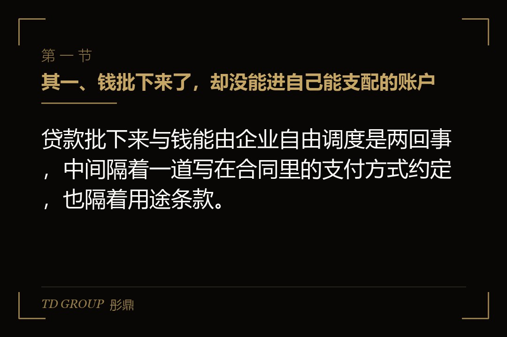
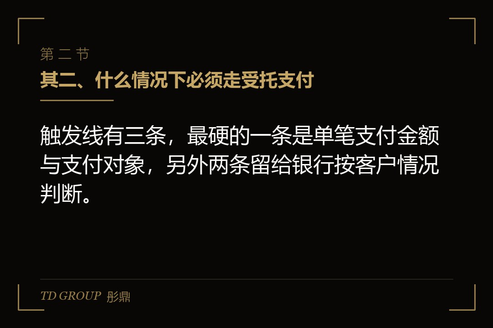
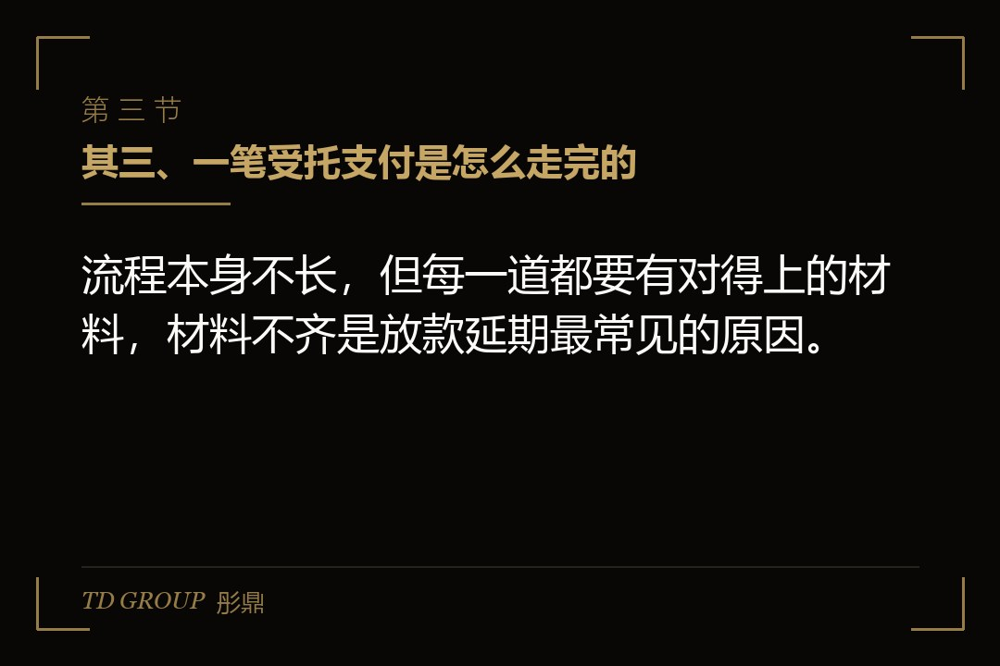
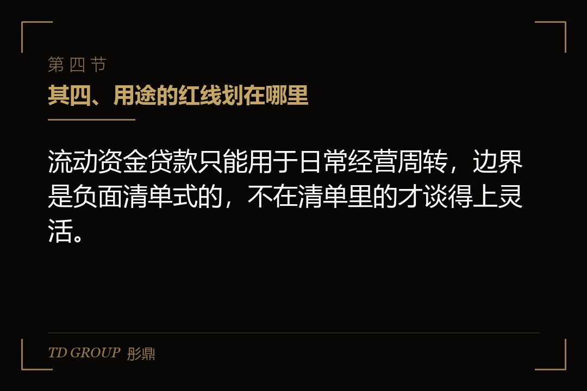
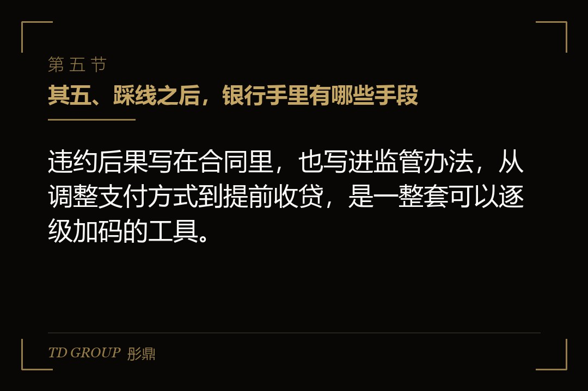
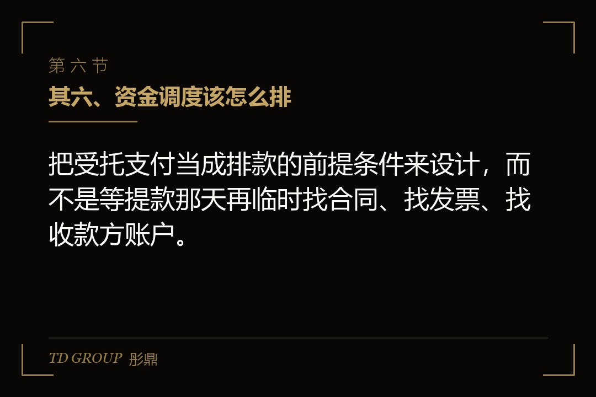
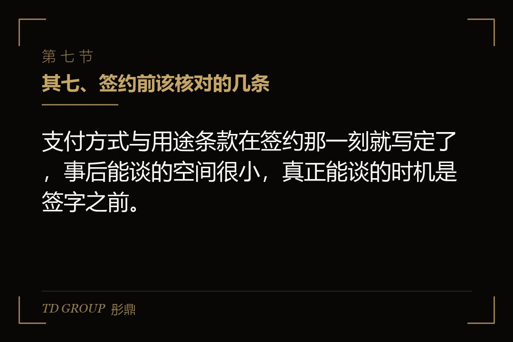

其一、钱批下来了，却没能进自己能支配的账户

结论先行：贷款批下来与钱能由企业自由调度是两回事，中间隔着一道写在合同里的支付方式约定，也隔着用途条款。
假设一家做专用设备的制造企业，年中拿到三千万元流动资金贷款，用途写的是原材料采购。企业计划把其中一千二百万元付给一家钢材供应商，按老办法让银行把钱划到自己的一般户，再由自己付出去。
银行给出的答复是：这笔支付对象明确，且单笔超过一千万元，应当采用贷款人受托支付——由企业提交提款申请和支付委托，附上采购合同与发票，银行审核通过后，把这笔钱从企业账户直接划给那家供应商。
企业财务当场不理解的点是：钱明明是借给我的，为什么我不能直接支配。这不是某一家的额外要求，而是《流动资金贷款管理办法》里的明文安排，适用所有银行业金融机构。理解这套安排，是理解"授信额度"与"可用现金"不是同一个数的起点。
其二、什么情况下必须走受托支付

结论先行：触发线有三条，最硬的一条是单笔支付金额与支付对象，另外两条留给银行按客户情况判断。
头一条是金额与支付对象。按《流动资金贷款管理办法》第三十条，支付对象明确且向借款人某一交易对象单笔支付金额超过一千万元人民币的，应采用贷款人受托支付。固定资产贷款适用同一金额标准：向某一交易对象单笔支付超过一千万元人民币的，应采用受托支付方式。
第二条是关系新旧的判断。与借款人新建立信贷业务关系且借款人信用状况一般，也应当采用受托支付。这一条不看金额，看的是银行对企业还没有形成足够的了解——信息不够时，用支付方式来控制风险。
第三条是银行认定的其他情形。这是一条兜底：合同里可以约定更低的金额标准，也可以针对特定用途单独要求受托支付。第二十九条写明，银行应根据行业特征、经营规模、管理水平、信用状况与贷款品种，合理约定支付方式及受托支付的金额标准。
个人贷款端也有对应的线：单次提款金额超过三十万元的个人消费贷款、超过五十万元的个人经营贷款，应采用受托支付。企业主同时经营个人经营贷时，这两条线要分开记。
其三、一笔受托支付是怎么走完的

结论先行：流程本身不长，但每一道都要有对得上的材料，材料不齐正是放款延期最常见的原因，多数卡在用途证明上。
头一步是提款申请与支付委托。企业在合同约定的提款期内提交申请，写清支付对象、支付金额、用途，并同时出具支付委托，授权银行把这笔钱直接付给指定的交易对手。
随后是用途证明材料。第三十一条要求，银行根据约定的贷款用途，审核支付申请所列支付对象、支付金额等信息是否与相应的商务合同等证明材料相符。实务里通常要备齐：采购合同或工程合同、发票或结算单、收款方账户信息，涉及关联交易的还要说明定价依据。
审核通过后，资金从借款人账户划出，直接支付给交易对象。注意资金的走向：名义上经过借款人账户，但停留时间极短，企业不能改变收款人和金额。这也是受托支付与自主支付最实质的差别——钱有没有在企业手里待过。
着急用款时有一条缓冲。第三十一条同时规定，对贷款资金使用记录良好的借款人，在合同约定的用途范围内出现合理的紧急用款需求，银行经评估认为风险可控的，可以适当简化事前证明材料与流程，于放款完成后及时完成事后审核。这条口子能不能用，取决于过往用款记录。
时限上也有明确放宽：固定资产贷款受托支付时限最长放宽至十日，不可抗力情况下可由借贷双方协商确定具体支付时限。排付款计划时，这段时限要算进去。
其四、用途的红线划在哪里

结论先行：流动资金贷款只能用于日常经营周转，边界是负面清单式的，不在清单里的才谈得上灵活。
《流动资金贷款管理办法》明确，流动资金贷款是指向法人或非法人组织发放的、用于借款人日常经营周转的本外币贷款。答记者问进一步划出禁止范围：不得用于股东分红，不得用于金融资产、固定资产、股权等投资，不得用于国家禁止生产、经营的领域和用途。
这里最容易踩的是"固定资产"这一项。企业用流贷去付一台设备的首付款，用途上就落到了别的品类里。要买设备，对应的是固定资产贷款，期限、担保、还款安排都不一样，用错品种会导致用途不符。
股东分红也是高频踩线处。账面有了利润、股东想把钱分出来，用流贷过一道手的做法在贷后检查里很容易被看出来——资金流水是连着的，分红必须有完税与决议文件。
自主支付不等于不查。第三十二条规定，采用借款人自主支付的，银行应按合同约定要求借款人定期汇总报告贷款资金支付情况，并通过账户分析、凭证查验或现场调查等方式，核查支付是否符合约定用途，以及是否存在以化整为零方式规避受托支付的情形。
"化整为零"这四个字要特别留意。把一笔一千二百万元的支付拆成两笔六百万元，试图绕开受托支付，会被直接认定为规避行为，后果比老实走受托支付严重得多。
其五、踩线之后，银行手里有哪些手段

结论先行：违约后果写在合同里，也写进监管办法，从调整支付方式到提前收贷，是一整套可以逐级加码的工具。
《流动资金贷款管理办法》第二十六条要求，银行应与借款人在合同中约定借款人违约时银行可采取的措施：提前收回贷款、调整贷款支付方式、调整贷款利率、收取罚息、压降授信额度、停止或中止贷款发放，并追究相应法律责任。触发情形包括未按约定用途使用贷款、未按约定方式支付、未遵守承诺事项、突破约定财务指标、发生重大交叉违约事件等。
第三十三条另有一条更直接的规定：在贷款发放或支付过程中，借款人出现信用状况下降、经营及财务状况明显趋差、贷款资金使用出现异常或规避受托支付等情形的，银行应与借款人协商补充发放和支付条件，或按合同约定变更支付方式、停止或中止贷款的发放和支付。
也就是说，风险可以停在半路。已经批了、还没放的额度，是可以不放的。这对企业现金流是硬冲击：账上按"还有两千万没提"排的付款计划，可能在一个电话之后落空。
真正伤人的往往是连锁反应。融资文件里普遍写有交叉违约条款，一处违约被确认，其他授信的提前到期条款可能同时被激活。企业遇到的从来不是一家银行的问题，是几家银行同时要求说明。
其六、资金调度该怎么排

结论先行：把受托支付当成排款的前提条件来设计，而不是等提款那天再临时找合同、找发票、找收款方账户。
头一条是按用途分账户。经营周转、设备购置、并购对价各走各的品种与账户，混在一处最容易在贷后检查里说不清。专款专用这类要求听起来教条，实际是保护企业自己——说得清的钱，才不容易被停。
第二条是把提款节奏与付款节奏对齐。受托支付需要材料与审核时间，供应商的付款节点是硬的，材料准备要提前到节点之前。把提款日定在付款日前三个工作日，是常见的稳妥做法；定在同一天，多半要延期。
第三条是别拆单。前面说过，化整为零会被直接认定为规避。真有拆分需求，正当的做法是与银行沟通用途与收款方结构，在合同里把支付方式约定清楚，而不是在付款环节自己动手。
第四条是留痕。商务合同、发票、收货与验收单据、付款申请的内部审批，这些材料平时就该按项目归档。贷后检查要的是一条完整的证据链——钱付给了谁、买了什么、货到了没有、发票开没开。链条断了，解释成本会非常高。
第五条是把关联交易单独拎出来。向关联方付款，除合同与发票之外，还要能说明定价依据与商业实质。这一项是贷后检查里被问得最多的，也是最容易答不上来的一项。
其七、签约前该核对的几条

结论先行：支付方式与用途条款在签约那一刻就写定了，事后能谈的空间很小，真正能谈的时机是签字之前。
其一是把受托支付的金额标准问清楚。办法给的是一千万元的线，合同里可以约定更低的线。低线意味着更多的支付要走银行审核，排款周期要按这个节奏来设计。
其二是把用途条款逐字读一遍。用途写"原材料采购"还是"日常经营周转"，可用范围差别很大。写得越窄，越容易在无意中越界；写得合适，调度才有余地。
其三是对齐紧急用款条款。第三十一条那条简化事前材料的口子，需要在合同里落到具体情形与流程，否则事到临头仍要走完整审核。用款记录良好的企业，这一条值得花力气谈。
其四是看交叉违约与承诺事项的范围。合并、分立、股权转让、对外投资、对外担保、实质性增加债务融资，这些事项在办法第二十五条里就要求事先征得贷款人同意。集团架构有调整计划的企业，签约时就要把这几条看明白。
其五是算清"批了"和"能提"的差额。授信额度是上限，可提金额还要看提款条件、支付方式与用途合规。财务上的资金计划应当按可提金额排，而不是按授信总额排。
华尔街彤鼎俱乐部在与企业方交流时常说一句话：贷款合同里最贵的不是利率，是那些平时没人读、出事时立刻生效的支付与用途条款。把这几页读完，比多谈五十个基点的意义更大。
---
本文为知识梳理，不构成专业意见或收益承诺。文中所涉监管规则以现行有效的《流动资金贷款管理办法》《固定资产贷款管理办法》及贷款合同约定为准，具体操作须向贷款行与专业机构核实。